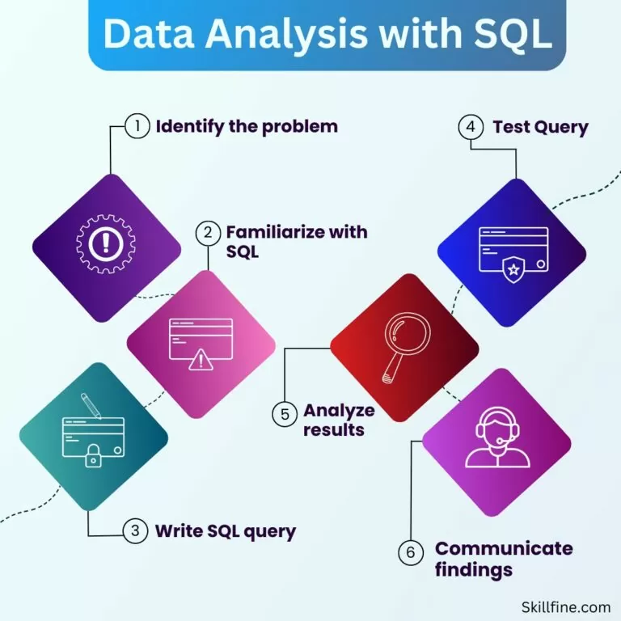

After a year of studying software engineering at Tel-Hai College, my career direction became clearer.
Amid the challenges of the Iron Swords War, my family and I relocated from Kiryat Shmona to Tel Aviv, where I discovered my passion for Data Analytics.
This led me to pursue specialized training at John Bryce, where I quickly became captivated by the power of data.
I was particularly inspired by how organizations—whether large corporations or small non-profits—can leverage data-driven insights to enhance decision-making and efficiency.
As a Junior Data Analyst, I am eager to apply my technical skills and analytical mindset, along with my newly acquired data analysis and visualization techniques, to contribute to a dynamic company.
I am passionate about learning, growing, and using data to drive meaningful impact.
- Data Analysis & Visualization: SQL, Python (Pandas, NumPy), Power BI, Excel.
- Programming: Python, Java, JavaScript.
- Web Development: HTML, CSS, Full-Stack Development.
- Embedded Systems: Arduino
- Other Skills: Data Cleaning, Data Manipulation, Reporting
I am excited to embark on this journey as a Data Analyst, continuously expanding my knowledge and skills.
My adaptability, problem-solving mindset, and passion for data-driven decision-making make me eager to contribute to a forward-thinking team.
I look forward to new challenges, collaborations, and opportunities to create meaningful insights that drive business success.
This is my first SQL project, where I learned the fundamentals of SQL, including table design and creation.

In this project, we applied SQL techniques to analyze data effectively. We focused on querying, filtering, aggregating, and extracting insights from structured databases.
Project Objective
The goal of this project is to analyze a database of choice—I chose a motorcycles database—by cleaning and refining the data. This involves handling missing values, correcting column inconsistencies, and conducting exploratory data analysis (EDA) using Python, Pandas, Matplotlib, and Seaborn. As a passionate rider, this topic is especially exciting for me, as it provides an opportunity to explore industry trends, performance metrics, and valuable insights within the world of motorcycles.
In this project, I analyzed a global dataset of plant sales to uncover key performance trends. After cleaning and preparing the data, I developed an interactive Quantity Performance Dashboard in Power BI. The dashboard offers actionable insights into sales quantities across regions, time periods, and product categories. It is designed to support data-driven decision-making with a focus on clarity, usability, and performance optimization.
In this project, I analyzed a worldwide coffee sales dataset and created a clean, interactive dashboard that delivers all key insights on a single screen. I cleaned and transformed the data by removing irrelevant columns, correcting inconsistencies, and standardizing names. The final dashboard provides a clear overview of sales performance, helping users quickly understand trends and make informed decisions.
In this project, I analyzed an extensive Ultra Marathon dataset spanning over two centuries, containing more than 1 million records. I performed comprehensive data cleaning, removing irrelevant columns and correcting inconsistencies to prepare the data for analysis. Due to the large file size (254MB), the dataset could not be uploaded. The final output provides meaningful insights into long-term performance trends and endurance patterns in ultra-distance running.